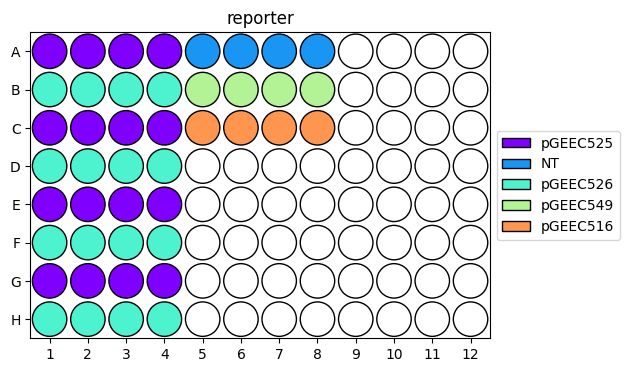
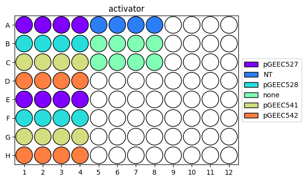
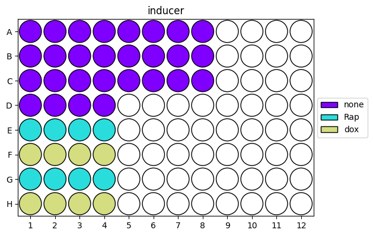

Loading flow cytometry data
For best transparency and reproducibility, we do most of our data analysis in Python.
While it is possible to do all steps in Python, practically it is (currently) easier to gate single cells
using FlowJo, a paid flow cytometry analysis software. This tutorial describes a workflow that starts with
single cells previously gated in FlowJo and exported as .csv files.
It describes how to load all samples into one Pandas DataFrame (in a Python Jupyter notebook) with associated experimental
metadata. From here, the data can be plotted and analyzed in Python.
Step 0: Set up your computational environment
Before starting to analyze your data, make sure your computational environment is set up. The first two steps only need to be performed once, and setting up the Git repo occurs only at the beginning of a project.
Set up lab software as described in Day 0: Software and training setup.
Perform the Computational environment check to confirm you can use Git properly.
Create a new Git repository for your project or clone an existing one by following the Startup checklist when working with repositories.
A file layout for a project Git repository may look something like this:
your-repo/ ├── analysis/ │ ├── exp001.ipynb │ ├── exp002.ipynb │ └── ... ├── inputs/ │ └── plasmid-metadata.csv ├── output/ │ ├── exp001/ │ │ ├── data.gzip │ │ ├── gates.svg │ │ ├── scatter.png │ │ └── ... │ ├── exp002/ │ └── ... ├── .gitignore ├── datadir.txt ├── README.md └── requirements.txt
The analysis directory contains Jupyter notebooks or scripts for data analysis and plotting, the inputs directory contains small
files needed for analysis (e.g., project-wide metadata), and the output directory holds processed data, plots, and other
files generated by analysis scripts. The datadir.txt file contains the local path to the raw data, as explained below.
datadir: Where is your data located?
To load your data in Python, you’ll need to specify the path to where the data is stored. We store all raw data generated by the lab
on the Smithsonian server. If you have the Nextcloud client synced locally on your computer, you can look up
the absolute path to the data folder and use this as the base path for loading the data from your experiment.
However, using this absolute path means that others can’t run your notebook as-is: they’d have to replace the path with one specific to their computer. For reproducible analysis and easy collaboration, you should instead specify a relative path that does not depend on the exact location of the data on your computer. Ideally, your notebook would contain paths relative to the location of the Smithsonian file sync (or, after publication and deposit on Zenodo, the location of a local download). That way, future users on other computers don’t need to edit any paths for your code to run.
While there are several ways this could be achieved, the Python package rushd (documentation here)
offers an elegant solution. rushd was created by members of the Galloway lab for this exact purpose: to make data management easier,
robust, and reproducible. Using this package makes it much simpler to collaborate on data analysis, and for the broader scientific community
to reproduce analysis and plots in published manuscripts.
Specifically, rushd offers the variable datadir, which represents the path to your main data directory, or the folder where all of your data lives.
This should be the highest level directory you’ll ever need for your project, i.e., the data folder on Smithsonian for the Galloway Lab.
You’ll need to set up this path just once per repo.
To do so, create the file datadir.txt in the root of your repo (as shown in the file structure above).
In the file, paste the full, absolute path to your main data directory. You do not need quotes or any other characters around this path, and this should be the only line in the file.
For example, on macOS, the path might look something like:
/Users/username/Library/CloudStorage/Nextcloud/kerberos@mit.edu@smithsonian.mit.edu/data
Tip
Be sure to add datadir.txt to the .gitignore file in your repo, so it isn’t tracked by Git.
Additionally, in your repo’s README.md, add a description of datadir.txt and how to create it, so that anyone who clones your repo can follow these same steps.
Note
If you edit datadir.txt while running a Jupyter notebook, you must restart the kernel for the changes to take effect.
Using rushd paths
Now you can use datadir as you would a normal path. For example, the final directory csv contains data files for one experiment:
/Users/username/Library/CloudStorage/Nextcloud/kerberos@mit.edu@smithsonian.mit.edu/ ├── data/ | ├── attune/ | │ ├── your-name/ | | | ├── 2026.01.01_exp001/ | │ │ │ ├── fcs/ | | | | | ├── A1.fcs | | | | | ├── A2.fcs | | | | | └── ... | │ │ │ ├── csv/ | | | | | ├── export_A1_singlets.csv | | | | | ├── export_A2_singlets.csv | | | | | └── ... | │ │ │ ├── wells.yaml | │ │ │ └── exp001.wsp | │ | └── ... | │ └── ... | └── ... └── ...
data_path = rushd.datadir/'attune'/'your-name'/'2026.01.01_exp001'/'csv'
rushd also provides the path rootdir, which points to the top-level directory of your Git repo. This is defined as the directory
where datadir.txt is directly located. rootdir allows you to write relative paths within the repo, since this absolute path also differs
across clones of the Git repo. For example, you could define a directory to save all the plots generated by your notebook:
output_path = rushd.rootdir/'output'/'exp001'
Tip
Add output/ to .gitignore so that Git doesn’t track your plots (since you can re-create these by running your code).
You will use these paths to load data and save plots in Step 2.
Step 1: Specify experimental metadata
Exporting your gated data from FlowJo as described here generates one .csv file per sample (tube or well). For plate experiments, these are named by
the well ID. To analyze the data, you’ll need to map well IDs to experimental conditions. rushd provides functions to do this easily, mapping
values for multiple variables/features (e.g., plasmids, inducers) to each well. This is done using .yaml files containing experimental metadata.
What are .yaml files?
YAML is a human-readable file format (data serialization language) that is often used for writing configuration files. It is similar to JSON. Basically, it is an easy, standardized way to write nested dictionaries and arrays, which is how you’ll use it here. For quick tips on syntax, check out this brief tutorial, from which some examples are reproduced below.
Dictionary elements are written as key-value pairs:
key: value
key2: value2
These can be nested using indentation:
nested_dict:
key: value
You can also create lists:
list:
- item1
- item2
And combine lists with dictionaries:
nested_dict:
list:
- key: value
- key2: value2
Numbers are interpreted as ints or floats; enclose values with quotes to treat them as strings.
Letters/words are treated as strings even without quotes. Indentations are meaningful.
This is the bare minimum you’ll need to write metadata .yaml files compatible with rushd; see the
official tutorial for more.
Writing experimental metadata
To specify metadata for experimental conditions that is compatible with rushd, include everything under the top-level group metadata.
Each item in this dictionary is a list of key-value pairs, where the group/list name is the feature name, the item keys are the
possible feature values, and the item values are well IDs. Conveniently, rushd supports ranges spanning rectangular regions,
e.g., A1-H12 for the entirety of a 96-well plate.
Here’s a generalized example:
metadata:
feature1:
- treatment1: A1
- treatment2: A2-A12
- treatment3: B1-B12
feature2:
- 1: A1-B1, A12
- 10: A2-B2
- 100: A3-B3
- 0: A4-B11
In this example, well A1 has the value treatment1 for the feature feature1 and the value 1 for feature2. Since we don’t specify a value of feature2 for well B12, it will be loaded as <NA>.
In a more realistic example, here are the contents of a .yaml file for an actual experiment.
In this experiment, a reporter plasmid (reporter) was transfected with different transcriptional activator plasmids
(activator) and treated with different small-molecule inducers (inducer). Here, the value NT refers to the non-transfected (aka untransfected)
condition. Each experimental condition is defined by a combination of reporter, activator, and inducer, and there are multiple wells per
condition (technical replicates).
metadata:
reporter:
- pGEEC525: A1-A4, C1-C4, E1-E4, G1-G4
- pGEEC526: B1-B4, D1-D4, F1-F4, H1-H4
- NT: A5-A8
- pGEEC549: B5-B8
- pGEEC516: C5-C8
activator:
- pGEEC527: A1-A4, E1-E4
- pGEEC528: B1-B4, F1-F4
- pGEEC541: C1-C4, G1-G4
- pGEEC542: D1-D4, H1-H4
- NT: A5-A8
- none: B5-C8
inducer:
- none: A1-D4, A5-C8
- Rap: E1-E4, G1-G4
- dox: F1-F4, H1-H4
As you can see, this format is a lot easier than writing out the full condition for each well!
Save the .yaml file near the .csv files, as shown in the file structure above.
To check that you labeled the wells properly, you can visualize the contents of the .yaml file using rushd:
base_path = rushd.datadir/'attune'/'kasey'/'2024.07.16_exp099'/'export_comp'
rushd.plot.plot_well_metadata(base_path/'wells.yaml')
{kind=link}

{kind=link}

{kind=link}

Step 2: Load data with metadata in Python
Now that you have a directory of .csv files for your samples and a .yaml file with experimental metadata,
you’re ready to load the data and metadata into a single Pandas DataFrame in Python. You can do this in a Jupyter notebook
in your project Git repo from Step 0.
The Pandas DataFrame is a data structure like a long-form array, where each row is a data point (single cell), and each column is a feature of that data (metadata feature or cytometer channel). The Seaborn plotting package works well with this data structure and contains a nice explanation of long-form data.
One of the goals of rushd is to make this loading easy. The lab has written several functions to do this:
rushd.flow.load_csvLoads a directory of
.csvfiles into a single DataFrame with filename metadata only. Useful for loading experiments run as tubes on the cytometer, or any data where the sample names do not contain well IDs.rushd.flow.load_csv_with_metadataLoads a directory of
.csvfiles into a single DataFrame with additional well metadata encoded by the given.yamlfile. Useful for loading one plate (most common).rushd.flow.load_groups_with_metadataLoads multiple directories of
.csvfiles into a single DataFrame with directory-level metadata, as well as well metadata encoded by the given.yamlfiles. Useful for simultaneously loading multiple plates (from multiple experiments, replicates, or one large experiment).
See the relevant section
of the rushd documentation for more details on these functions.
In the simplest form, you only need to pass a path to the directory with .csv files and a path to the .yaml file.
Assuming a file structure in Smithsonian like the one above, a call might look like:
base_path = rushd.datadir/'attune'/'your-name'/'2026.01.01_exp001'
df = rushd.flow.load_csv_with_metadata(base_path/'csv', base_path/'wells.yaml')
Check out this tutorial for
more examples using rushd to load files, including zipped data, non-default filenames, specific columns, and multiple groups.
Adding condition-level metadata
When writing a .yaml file, it is easiest to define conditions based on plasmid IDs. However, when analyzing data, you
may wish to subset or group condition based on features of those plasmids, or other information about a condition beyond its
short name. This information is likely to remain constant across an entire project, so it would be nice to only define this
once and apply it when analyzing individual experiments. Of course, you could copy and paste a dictionary that maps additional
metadata to plasmids, but as the number of plasmids or metadata features increases, this can become unwieldy.
Instead, it can be convenient to make a spreadsheet of metadata, load this metadata, and add it to your data DataFrame.
The spreadsheet should contain a column for the plasmid ID (or however you label conditions in your .yaml file) and additional
columns for each new metadata feature. For example, a plasmid metadata file could look something like this:
plasmid |
backbone |
promoter |
gene |
pas |
pGEEC501 |
pShip |
EFS |
mRuby2 |
bGH |
pGEEC502 |
pShip |
EFS |
mRuby2 |
SV40 |
pGEEC503 |
pShip |
EFS |
mRuby2 |
WPRE |
… |
… |
… |
… |
… |
pGEEC737 |
pPB |
CAG |
mRuby2-P2A-PuroR |
bGH |
Save this file as a .csv or .xslx file in the inputs directory in your project Git repo.
To load this as a DataFrame in Python, use Pandas (see the relevant section of the documentation here):
# for .csv
metadata_path = rushd.rootdir/'inputs'/'plasmid-metadata.csv'
df_metadata = pandas.read_csv(metadata_path)
# or, for .xslx
metadata_path = rushd.rootdir/'inputs'/'plasmid-metadata.xlsx'
df_metadata = pandas.read_excel(metadata_path)
To apply this to your loaded data, use the Pandas merge function. Note that this will add all the new metadata columns
to your data DataFrame, which may significantly increase its size. You could consider only adding a subset of the metadata
columns to the DataFrame.
In the simplest form, where the column names match, this looks like:
df = df.merge(df_metadata, on='plasmid')
However, as in the experiment example above, multiple plasmids were added to each condition, so we might want to map metadata
for each plasmid. To do this, we can call merge multiple times:
df = df.merge(df_metadata, left_on='reporter', right_on='plasmid')
df = df.merge(df_metadata, left_on='activator', right_on='plasmid', suffixes=('_reporter','_activator'))
Note
If you re-run this code, the merge function will duplicate the columns, appending the suffixes
_x and _y to the old and new columns, respectively. To avoid this, you may wish to add metadata in the same cell
as you load your data, or just re-load the data before re-merging the metadata.
In our running example, the DataFrame df now has the following columns:
data:
FSC-A,FSC-W,FSC-H,BL1-A, … ,VL1-H,Timefilename metadata:
well,populationwell metadata:
reporter,activator,inducercondition metadata:
backbone_reporter,promoter_reporter,gene_reporter, … ,pas_activator
The number of rows corresponds to the number of single cells in the entire experiment.
Now you’re ready to visualize and analyze data! See the example Jupyter notebook for analyzing flow cytometry data
in the example-training Git repo here.
Start by exploring your data: draw gates to define expressing cells in each channel, visualize these gates on untreated and single-color
control conditions, plot 1D and 2D distributions for relevant channels for all conditions, and plot distributions for subsets of conditions
to facilitate comparison. Then, calculate and visualize summary statistics (e.g., geometric mean) for each condition as well as
additional metrics relevant to your experiment (e.g., fold change). Summarize your findings in concise plots, and perform
statistical tests on replicates. Good luck, and may your data be interesting!